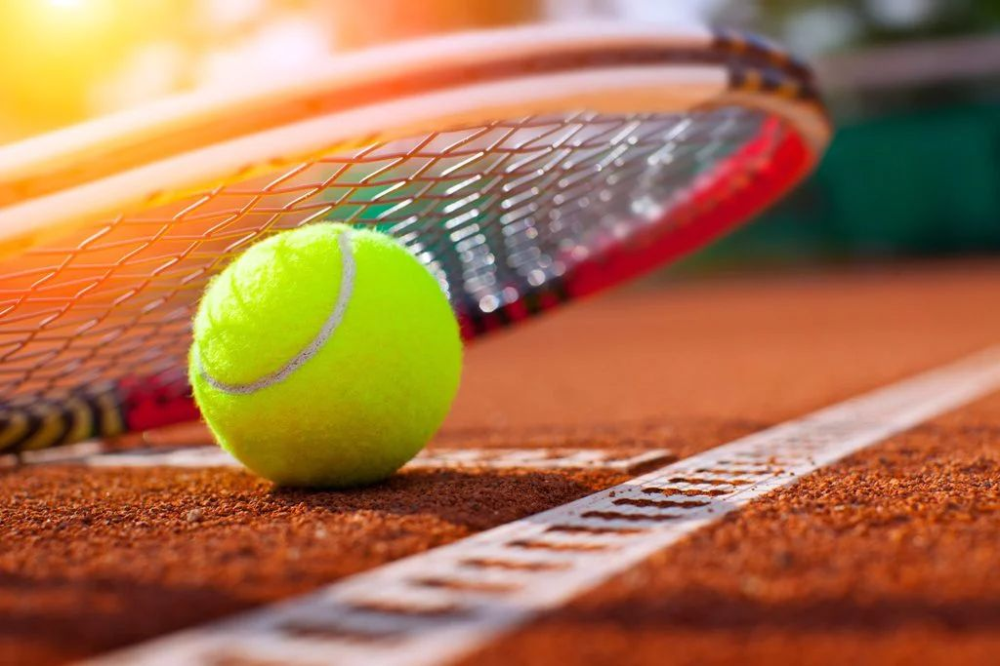

Experience the raw emotion and mathematical beauty of the court.
Tennis is more than a sport; it is a symphony of focus and physics. From the red clay of Paris to the grass of London, it demands absolute perfection in every movement.
Tennis is a series of high-stakes trajectories and probabilities.
